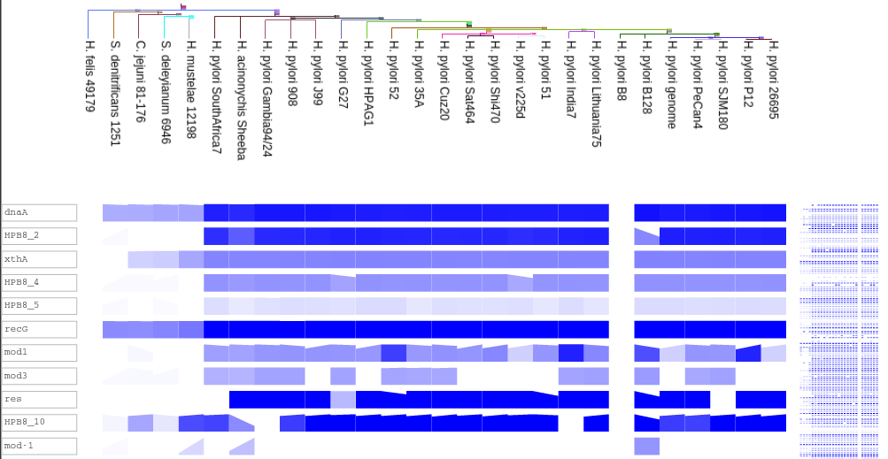

Metagenomics Visualization
Metagenomics Visualization Tools
Visualization Tools
- Krona
- GraPhlAn
- AmphoraVizu
- Elviz
- MGAViewer
- SynTview
- VAMPS
Krona Visualization : Features
- Exploration of relative abundances within the complex hierarchies of metagenomic classifications.
- Exploration of Functional abundance.
- Krona combines a variant of radial, space-filling displays.
- Parametric coloring and interactive polar-coordinate zooming.
Fig.1 Sreenshot of krona visualization. [1]
Details
- Input : Biome format
- Output :
- Mode of use :
- License :
Krona Visualization
Fig.2 Taxonomy nodes are shown as nested sectors arranged from the top level of the hierarchy at the center and progressing outward.[1]
GraPhlAn
- Generates circular phylogenies integrated with high-dimensional metadata.
- Visualization of phylogenetic, functional, and taxonomic summaries
- Highlights the taxonomic origins of metagenomic biomarkers
- Exposing specific microbiome metabolic enrichments within a functional ontology
Details
- Input : Biome format
- Output :
- Mode of use :
- License :
GraPhlAn
Fig.3 The taxonomic cladogram shows a comparison between the MetaHIT and HMP studies.[2]
GraPhlAn
Fig.4.1 Comparison of microbial community metabolic pathway abundances between HMP and MetaHIT.[2]
GraPhlAn
Fig.4.2 genome phylogeny annotated with functional genomic properties.[2]
AmphoraVizu
- Phylogenetic distribution of the metagenomic sample.
- Uses the tabular output of AMPHORA2 for phylotyping
- Visualization of overall and per sample abundance at taxonomy level
Details
- Input : Biome format
- Output :
- Mode of use :
- License :
Amphoravizu
Fig.5 Grouped bar chart showing phylum level abundance of metagenomics sample.[3]
Amphoravizu
Fig.6 Pie chart showing overall phylum level abundance of metagenomics samples.[3]
Elviz (Environmental Laboratory Visualization)
- Elviz is an interactive web-based tool for the visual exploration of assembled metagenomes
- To navigate metagenome assemblies across multiple dimensions and scales
Details
- Input : Biome format
- Output :
- Mode of use :
- License :
Elviz
Fig.7 The bubble-plot displays assembled contigs.[4]
Elviz
Fig.8 Panel showing all of the metadata of clicked contig.
The user can explore gene annotations on the contig.[4]
Elviz
Fig.9 Contigs containing PFAM domains from the mtr gene are identified using search.[4]
MGAviewer
- MGAviewer is a tool for comaprison of assembled metagenomes against reference.
- Comaprision between one or many sample against reference
- Provides features to visualize annotation.
Details
- Input : Biome format
- Output :
- Mode of use :
- License :
MGAviewer
Fig.10 Alignment view of assembled metagenome data.[5]
synTView
- Display synteny relationships between a reference genome and a set of related genomes.
- It is designed to visualise polymorphism across a large number of bacterial strains.
- Population genomics data involving a collection of isolates
- SNPs are the most frequently represented data.
- The phylogenetic profile consists of a heat map.
Details
- Input : Biome format
- Output :
- Mode of use :
- License :
synTView
Fig.11 .[6]
synTView
Fig.12 circular view indicates whether the conserved syntenic region is localised identically in complete genomes.[6]
synTView

Fig.13 Phylogenetic profiles representing a defined gene set.[6]
VAMPS
Details
- Input : Biome format
- Output :
- Mode of use :
- License :
VAMPS
Fig.14 VAMPS explore the distribution pattern of one of the dominant taxa and its effect on the clustering of samples.
The example includes the use of bar charts, heatmaps, abundance graphing, dendrograms, and alpha diversity calculations.[7]
THE END
Reference
- Krona : http://bmcbioinformatics.biomedcentral.com/articles/10.1186/1471-2105-12-385
- GraPhlAn : http://www.ncbi.nlm.nih.gov/pmc/articles/PMC4476132/
- AmphoraVizu :http://pitgroup.org/amphoravizu/
- Elviz : http://bmcbioinformatics.biomedcentral.com/articles/10.1186/s12859-015-0566-4#Fig2
- MGAViewer : http://bioinformatics.oxfordjournals.org/content/29/1/122.full
- synTview : http://bmcbioinformatics.biomedcentral.com/articles/10.1186/1471-2105-14-277#CR20
- VAMPS : http://www.ncbi.nlm.nih.gov/pmc/articles/PMC3922339/